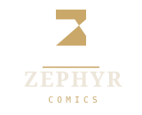

四个方向，四套不同的构图策略：满幅图形、大色块、高对比，不再有「暗底大空块里放一个小淡形状」。
颜色全部来自 lib/theme/zephyr_theme.dart；字标 ZEPHYR 用通用族 serif（对应主题的 display 角色）+
COMICS 用 monospace（对应 metadata 角色），两道锁定都加了一条米金细线 —— 也就是阅读页底部那条进度细线。
图形压在 64 格的中间约 66%，等于 Android 自适应图标的安全区。
三道收笔的风带斜扫底板，左上厚、右上收成尖。Zephyr 就是西风 —— 不画书，用「风」承担名字。 锥形收笔是它和普通「三条平行线」的区别，也是这套形状里唯一的手工感。 代价要说清楚：图形本身不说明「阅读器」，得靠字标补。

纸底上一个大写的几何 Z，只用一色：浅色主题那档加深米金 #7E6128，在纸上有 5.05:1，过 WCAG AA
（原型那档米金只有 3.10:1，不够）。四案里最粗、24px 最清楚，识别完全不靠细节，只靠 Z 的斜切收笔。
它也是唯一底色是亮的一案 —— 放在暗色桌面上最跳。代价：字母与全中文界面略脱节。

三本书并排立在一条搁板上，宽度不等，中间那本米金、还微微歪着。歪的那一本就是「正在读」—— 和界面里米金＝当前（阅读模式分段控件、书架选中态）是同一套语义。 四案里它最直白地说出「这是个书库」，也最容易理解。代价：偏几何、少一点纸感。

一本从上方看下去摊开的书：左页纸色、右页米金，中间那道缝留给暗底当书脊。 四案里「书」这件事说得最体面的一案，满幅对角构图、没有一处是空的，也最适合直接当启动图标。 代价：图形比较满，缩小到 24px 时两页会靠色块对比来分辨。
